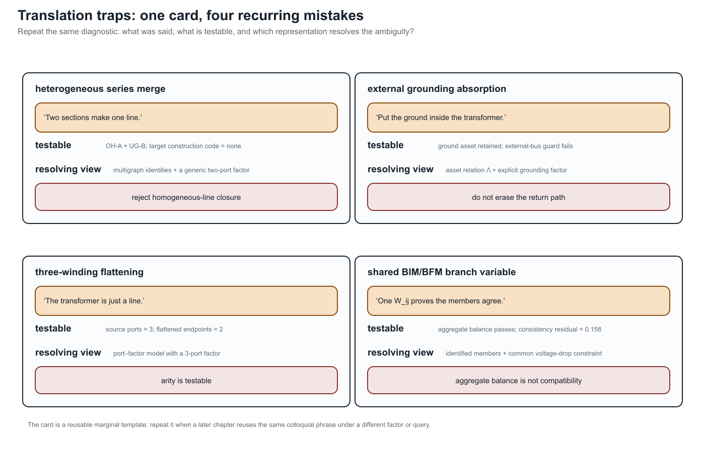

Translation traps: graphs, circuits, and power-system language
Page status: reviewed explanatory synthesis and controlled vocabulary.
Why familiar words become dangerous
Graph theory, circuit theory, power-system practice, software and data modelling, mathematical optimization, and graph machine learning each have internally useful vocabularies. Trouble begins when a statement is moved from one vocabulary to another without also moving its assumptions. The short five-community vocabulary bridge introduces the communities and their characteristic false friends; this chapter develops the failures that matter for power-network models.
For example, the line is directed from $i$ to $j$ may be harmless data shorthand for the stored triple $\ell ij$. It is false if it is read as a claim that active power must be nonnegative at that terminal. Similarly, the feeder is radial may describe the simple bus projection while the identified line multigraph contains a two-edge cycle formed by parallel circuits.
This chapter is an early warning map. Later chapters give the detailed definitions and proofs. Here the objective is to replace an underspecified phrase by a statement whose representation, variables, and study meaning are testable.
A disciplined translation pattern
When a familiar sentence carries mathematical weight, ask four questions:
- Which representation? Name the simple graph, identified multigraph, port–factor incidence model, equation graph, asset relation, or another declared object.
- Which quantity? Name the terminal current, terminal power, internal series current, voltage, state, constraint, or decision.
- Which state and domain? State switch status, outage scenario, frequency, approximation, and admissible operating set.
- Which consequence? State whether the claim concerns connectivity, equations, feasible sets, limits, objectives, or physical assets.
The controlled replacement for power flows on edge $\ell ij$, for example, is: at this operating point, $P_{\ell ij}$ is the active-power injection into terminal $i$ of member $\ell$, using the stored orientation $\ell ij$. That sentence remains valid if the operating transfer reverses.

The card is a deliberate template rather than a summary of four isolated mistakes. When a later chapter reuses a colloquial phrase, it should be able to repeat the same three fields in a margin or caption: quote the phrase, name a checkable quantity or guard, and identify the graph or factor model that makes the distinction visible.
Highest-priority translations
- The network graph becomes the named graph derived for the stated query.
- Line $\ell$ is directed $i$ to $j$ becomes $\ell ij$ is its stored orientation, unless direction is an intrinsic admissibility relation.
- Power on line $\ell$ becomes the terminal-power pair $(\mathbf S_{\ell ij},\mathbf S_{\ell ji})$ and its sign convention.
- Current is conserved on the edge becomes KCL holds at junctions; terminal-current antisymmetry depends on the device factorization.
- Power is conserved at the bus becomes terminal power balance follows from compatible voltages and KCL; device losses appear in sums over device terminals.
- The network has a cycle becomes the named representation has a specified cycle or cycle-space element.
- These lines are parallel becomes state whether parallelism is topological, terminal, electrical, operational, or homogeneous.
- This feeder is radial becomes the named active simple graph or identified multigraph is a forest.
- This bus is a leaf becomes its degree is one in the named graph; this alone does not authorize elimination.
- The reduced branch is equivalent becomes the reduced factor preserves a declared boundary observation and may not represent a physical asset.
These replacements are deliberately a little longer. The cost is small compared with an invalid reduction, a missing terminal limit, or a topology claim made on the wrong graph.
Flows, signs, and conservation
An arrow is not an operating direction
An ordinary passive line has unordered physical incidence $\partial\ell=\{i,j\}$. Selecting $\ell ij$ fixes a reference orientation and terminal order. It does not imply
\[P_{\ell ij}\ge 0 \quad\text{or}\quad \ell\text{ permits transfer only from }i\text{ to }j.\]
The sign of $P_{\ell ij}$ is an operating-point result. A genuinely directed relation instead needs asymmetric physics or admissibility, such as a one-way control dependency. The complete distinction is developed in Orientation, terminal quantities, and power transfer.
A branch arrow in a one-line diagram, data record, or optimization model often means stored first end and second end. Do not infer the sign of current or power from it.
A lossy branch has terminal powers, not one conserved flow
With currents defined into a two-terminal series element,
\[I^{\mathrm s}_{\ell ji}=-I^{\mathrm s}_{\ell ij}, \qquad S_{\ell ij}=U_i(I^{\mathrm s}_{\ell ij})^*, \qquad S_{\ell ji}=U_j(I^{\mathrm s}_{\ell ji})^*.\]
For $Z_\ell=R_\ell+\mathrm jX_\ell$, these statements imply
\[S_{\ell ij}+S_{\ell ji} =Z_\ell|I^{\mathrm s}_{\ell ij}|^2, \qquad P_{\ell ij}+P_{\ell ji} =R_\ell|I^{\mathrm s}_{\ell ij}|^2.\]
Thus opposite series currents do not produce opposite terminal powers unless the relevant loss is neglected. A nominal-$\pi$ factor is more subtle: currents at the two composite terminals need not be negatives because the factor also contains paths through its shunts. The missing current has not vanished; it is accounted for inside the composite factor.
A branch carries one flow is a commodity-flow abstraction, not the semantics of a general AC multiport. Report both terminal observations and the device balance. A single antisymmetric active-power variable is a declared lossless approximation.
KCL is a junction statement; power balance needs voltage compatibility
Let currents be defined into all factors attached to a junction $i$. KCL is
\[\sum_{q\in\operatorname{ports}(i)}\mathbf I_q=\mathbf 0,\]
after every port current has been mapped into the junction's conductor coordinates. If those ports also share the compatible junction voltage $\mathbf U_i$, multiplication by that common voltage yields the corresponding complex-power balance,
\[\sum_{q\in\operatorname{ports}(i)} \mathbf 1^{\mathsf T} \bigl(\mathbf U_i\circ\mathbf I_q^*\bigr)=0.\]
This does not say that power is conserved through each edge. At a junction, power balance is derived from KCL plus voltage compatibility and consistent terminal maps. In a device, the sum of terminal powers records absorption, generation, or storage according to the constitutive model.
Branch ratings reinforce the terminal view. Sending-end current, receiving-end current, series-conductor current, thermal state, and apparent power are not interchangeable limits, especially for nominal-$\pi$ and multiconductor models.
Topology is not an operating story
A cycle is not a loop flow
A cycle is a property of a declared graph or incidence structure. It may support a cycle-space coordinate, but topology alone does not assert a nonzero circulating current or power transfer at an operating point. Parallel members form a two-edge line-identity cycle even though their simple projection has a single adjacency. Conversely, a cycle produced by the clique projection of one multi-terminal factor need not be an alternative physical path.
Separate the existence of a cycle, a chosen cycle basis, a nonzero cycle coordinate, and a physical circulating flow. These are four different claims.
Radiality, leaves, and bridges depend on the graph and state
A feeder may be adjacency-radial in its simple projection and not member-radial in its identified multigraph. It may also be meshed in the asset inventory and radial in one active switching state. The terms leaf, degree-two bus, bridge, and radial tail likewise require a graph and an active state.
None of those predicates alone authorizes elimination:
- a leaf can own a load, grounding factor, measurement, control, or boundary observation;
- a degree-two junction can have a shunt, phase change, or terminal mismatch;
- a bridge can be essential to service, protection, reliability, or an investment decision;
- an open line can remain an asset with maintenance, restoration, and future state semantics even when it is absent from the active electrical graph.
Adjacency does not imply direct electrical coupling
A physical connection can be open in the active state, or its terminal maps can leave some conductors unconnected. Conversely, mutual impedance, a shared neutral, a multiwinding factor, or eliminated internal variables can couple nodal equations whose bus vertices are not adjacent in a selected topology graph. Connectivity, energization, constitutive coupling, and matrix nonzero patterns must therefore be tested separately.
In particular, connected does not mean energized. Energization requires a state-dependent path to an admissible source, together with the device and grounding semantics used by the study.
Equivalence is always relative to a question
The same nodal admittance is not the same decision problem
Two models can have the same unconstrained terminal admittance while differing in member ratings, outages, switches, controls, ownership, measurements, or investment choices. They then need not have the same feasible set or optimum. The parallel-line examples in this book make this failure executable.
Likewise, small voltage error on a scenario set is evidence about one observation metric. It is not, by itself, a bound on feasibility error, objective error, active-limit error, or discrete-decision error.
Never promote equality of $Y$-bus matrices, a small state error, or a correct base-case power flow into decision equivalence without a constraint map and the relevant feasible-set or error certificate.
An equivalent branch need not be a line
Kron elimination produces a boundary relation. A Ward construction adds a realization of the eliminated external system for a specified study. Either can introduce dense couplings, shunts, sources, or general multiport factors. Calling each off-diagonal block a line can accidentally assign physical meaning, ratings, failures, or ownership that the reduced object does not possess.
A recovery map can still evaluate source quantities from retained variables. That is often more faithful than inventing limits on artificial reduced branches. Kron, Ward, and optimized network equivalents separates boundary reduction from target-library realization.
Equality of matrices is coordinate- and model-dependent
Matrix properties need precise names. Reciprocal multiconductor impedance or admittance matrices are commonly complex symmetric, $\mathbf Y^{\mathsf T}=\mathbf Y$. They are not generally Hermitian, $\mathbf Y^{\mathsf H}=\mathbf Y$. Positive-real or passivity conditions concern the Hermitian part $\operatorname{He}(\mathbf Y)$ and should not be replaced by a vague symmetry claim.
Similarly, a per-unit conversion is a coordinate transformation only when the voltage, current, power, impedance, transformer, and terminal bases are moved consistently. A neutral reduction is an elimination or grounding operation, not the graph-theoretic deletion of a spare vertex. Both transformations need typed maps and stated domains.
Devices that resist the ordinary-edge picture
An ideal transformer, a phase-shifting transformer, and a multiwinding transformer are not adequately described as an ordinary lossy edge with one impedance. They can impose voltage and current coordinate actions, grounding relations, winding constraints, and controllable ratios. Compiling a multi-terminal factor into pairwise edges or a virtual star may create or remove apparent graph cycles while preserving a declared terminal relation.
The canonical electrical object in this book is therefore the hierarchical port–factor incidence model. The directed attributed bus–branch multigraph is an important engineering view, and the simple graph is a useful quotient, but neither is asked to carry facts that it cannot represent.
Recurring callouts used in the book
Later chapters use five controlled callout labels:
- Graph-theory trap: a correct graph concept has been applied to an unnamed or inappropriate representation.
- Circuit-theory trap: a conservation or device statement has been applied outside its factorization or constitutive assumptions.
- Power-system shorthand: a familiar phrase is useful in context but mathematically underspecified.
- Decision-model consequence: a representation or reduction changes what can be constrained, chosen, observed, or recovered.
- Vocabulary bridge: a familiar term crosses a community boundary and its object, qualifier, or unsafe inference must be made explicit.
These callouts do not replace definitions or proofs. Each should give a precise replacement statement and link to the chapter that establishes it.
Scope and controlled vocabulary
The current controlled vocabulary makes these ten translations explicit:
- one physical system can have several legitimate graphs;
- a branch arrow does not determine operating flow direction;
- a lossy branch owns a pair of terminal powers;
- KCL is not a claim that one power commodity is conserved on every edge;
- a graph cycle is not an operating loop flow;
- topological parallelism is weaker than electrical or operational aggregability;
- radiality, leaves, and bridges require a representation and active state;
- bus must distinguish physical, connectivity, topological, and reporting objects;
- equal admittance or small voltage error does not establish decision equivalence;
- a reduced equivalent factor is not automatically a physical asset.
Further scope questions remain for connectivity versus energization, neutral elimination, per-unit coordinates, ideal transformations, and cycles created by multi-terminal compilation; the enacted definitions and witnesses in the current sections delimit what is established so far.
First executable witnesses
The first three distinctions now have package-independent executable witnesses. They are intentionally small: each isolates one translation rather than pretending to validate a complete power-system solver.
Connectivity versus energization
The inventory contains the path $source--bus_a--bus_b--load$, but the $bus_a--bus_b$ member is open in the active state. The load is connected in the asset graph and not energized in the active electrical graph. This is the minimum counterexample to treating inventory connectivity as an operating-state claim.
Complex symmetry versus Hermitian structure
The witness uses a reciprocal complex matrix $\mathbf A$ satisfying $\mathbf A^{\mathsf T}=\mathbf A$ but not $\mathbf A^{\mathsf H}=\mathbf A$. Its Hermitian part is positive semidefinite. This separates reciprocity, conjugate symmetry, and passivity tests without relying on a particular network package.
Terminal-specific ratings
For a scalar nominal-$\pi$ factor, the series current is $I^{\mathrm s}=Y^{\mathrm s}(U_i-U_j)$ while the composite terminal currents also include their respective shunts. The witness chooses a voltage pair for which the two terminal current magnitudes differ, then places an illustrative rating between them. One terminal therefore violates the rating while the other does not. This is not a proposed rating rule; it is a guard against silently replacing terminal-specific limits with one edge scalar.
Executable anti-pattern witnesses
The same distinctions can be tested rather than left as warnings. The extended translation-trap witness records four negative cases in experiments/generated/translation-trap-witnesses.json:
| Anti-pattern | Executable observation | Correct interpretation |
|---|---|---|
| heterogeneous series merge | pure-series elimination succeeds, but the target is marked outside the homogeneous physical-line class | keep the generic two-port composite and its source identities, or prove stronger line-class guards |
| external grounding absorption | the transformer compiler rejects a grounding object whose scope is external_bus | retain the grounding relation as a separate bus/grounding object |
| line–transformer flattening | a three-port factor is projected to two line endpoints | the two-terminal view loses winding incidence and cannot stand in for the transformer factor |
| BIM/BFM index loss | aggregate branch balance holds while the member consistency residual is nonzero | branch identities or the common-voltage-drop relation must remain in the formulation |
These are deliberately negative witnesses: they do not show that every composition is impossible. They show that a tempting shorthand fails a named guard, or changes the model class, even when a smaller behavioural statement still looks plausible.
Run the witness and its tests from the repository root:
julia --project=experiments experiments/run_translation_traps.jl
julia --project=experiments experiments/test/runtests.jlThe generated result is experiments/generated/translation-trap-witnesses.json. The source module is experiments/transformations/TranslationTraps.jl; the anti-pattern extensions are implemented in experiments/transformations/AntiPatternWitnesses.jl.